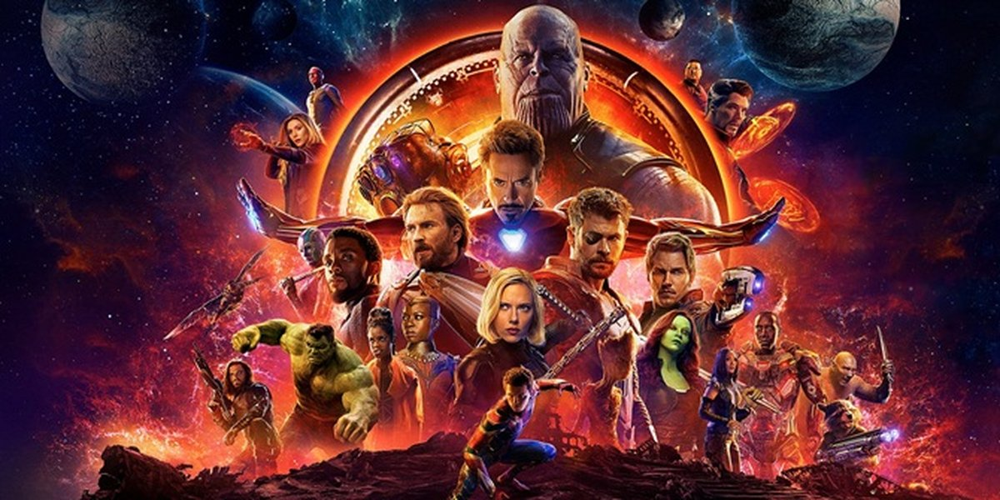
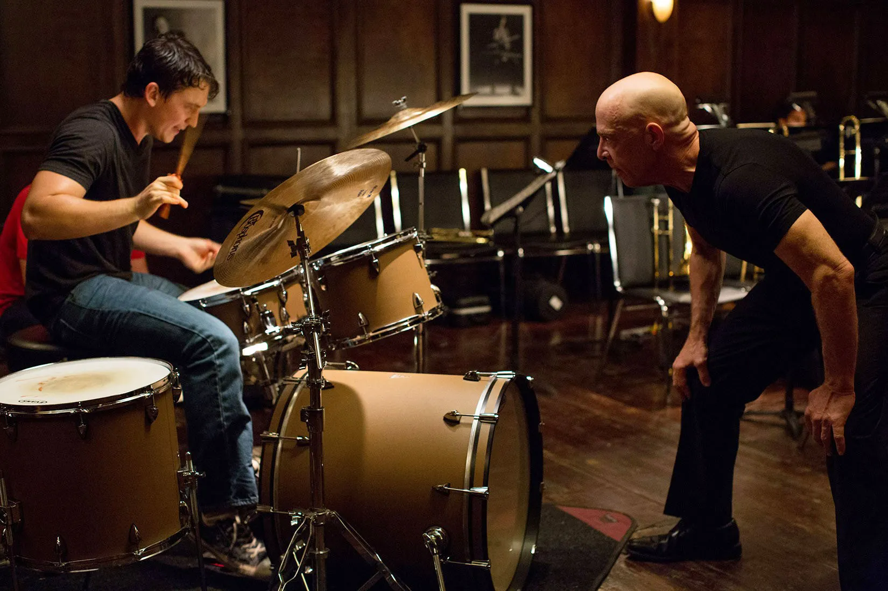

Avengers: Infinity War (2018)
Action, Adventure, Sci-Fi

Directors: Anthony Russo, Joe Russo
Writers: Christopher Markus, Stephen McFeel
Stars: Robert Downey Jr., Chris Hemsworth, Mark Ruffalo
The pinnacle of Marvel Cinematic Universe presented in glorius superhero momment. This one is a must watch for every marvel fan out there.
Whiplash (2014)
Drama, Music

Directors: Damien Chazelle
Writers: Damien Chazelle
Stars: Miles Teller, J.K. Simmons, Melissa Benoist
A minimalistic musical movie with an unpredictable twist and interesting characters. Normally I'm not into musical movie genre, but this one is an exception. It has all the recipe for great movies, storytelling, character development, shocking momments, you name it!
The Prestige (2006)
Drama, Mystery, Sci-Fi

Directors: Christopher Nolan
Writers: Jonathan Nolan, Christopher Nolan
Stars: Christian Bale, Hugh Jackman, Michael Caine
At first it was difficult to understand, but the build-up was worth it. There are not many great movies about magician, therefore makes this movie one of the more unique movies out there.